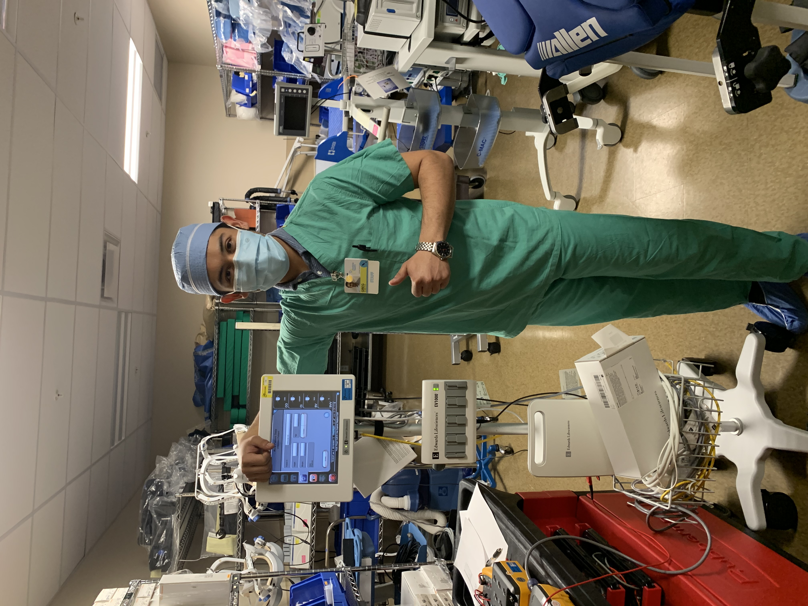
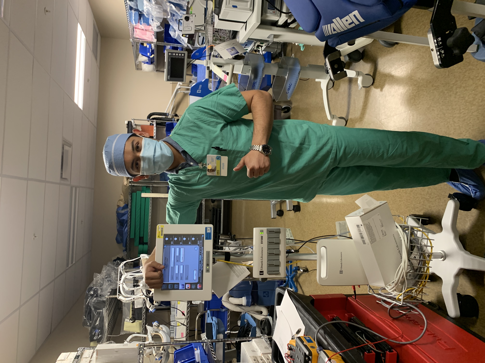

About Me
I am currently a sophomore at The University of Texas at Austin majoring in Management Information Systems! I grew up in Burnet, TX, located about 45 minutes Northwest of campus. I love spending time with my parents and younger sibilings! Cars are my absolute passion, I just really enjoy looking at them (classic or new) to admire their styling. I honestly try to live life enjoying every second of everymoment especially with my family and friends!


I can usually be found at a coffeeshop, somewhere outside on campus, or, from time-to-time, running around in Disney World. My favorite foods include Pirate's Booty (it's good, trust me) and pasta, and I could probably survive on cold brew coffee. The way to my heart is a classic chocolate milkshake or a random trip to Target!
My Favorite Website
Click Here to go to my YouTube channel!